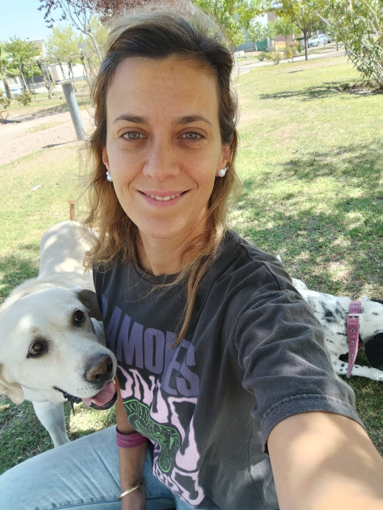

With one of the girls
With one of the girls
My life has revolved around dentistry for 15 years, but I always felt that there was something wrong with it, like a splinter in my mind. The first time I discovered programming, I felt like Alice falling down the rabbit hole, unveiling a wonderful world filled with amazing people I aspire to work with. The desire to be an active part of this world, to make a difference, became the catalyst for a significant shift in my career.